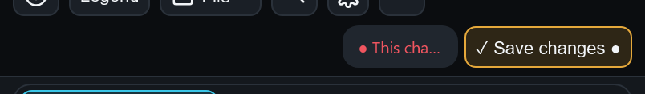

1 · Tracker bar: refusal words cut off
What happens today. Hunter has unsaved chart edits on 149's Tracker, a squadron he plans, and switches to the member view. That takes his pages back to his own squadron, 142. There he picks another squadron or logs out, the app asks about his edits, and he presses Save them. The Save is refused, because the app never saves into a Tracker other than his own pages' squadron, and a box says "This change could not be saved." That part is right. A member can save charts on his own squadron's Tracker: members and admins have the same rights there, and only the flex settings are an admin's.
Back in the admin view, the Tracker's bar repeats the same words in red beside Save changes, cut short: "This cha…" on a phone, "Th…" on a desktop. They stay like that until his next save. On a desktop the space is 51 wide and the words need 183, so widening it would wrap the bar onto more rows.
What you have already ruled. Elsewhere in the app, a change that is refused shows as the plain grey note that opens with a bold "Blocked:" (the schedule, the Leave War, the Grades window). The Tracker's refusal does not use that look.
The Tracker's refusal takes that same grey "Blocked:" note, its words whole, and the bar keeps only a small red mark beside Save changes. Drawn for you first, with the other choice beside it: the red words on a line of their own under Save changes.
